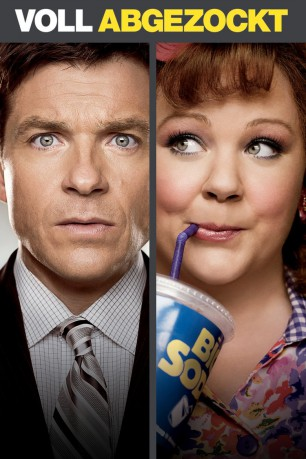
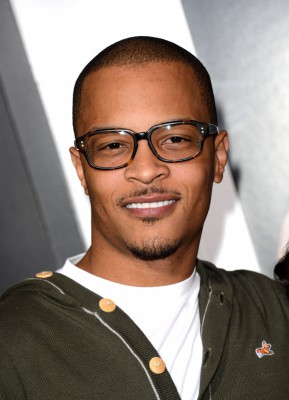
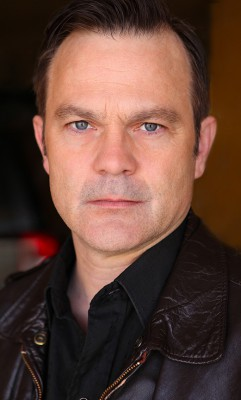
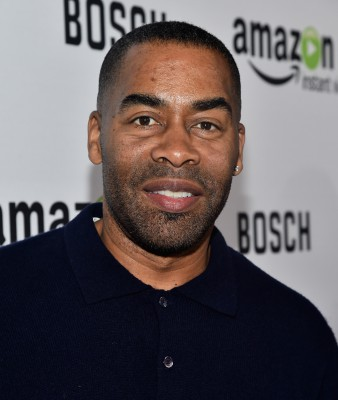
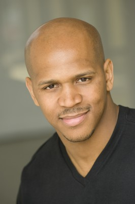
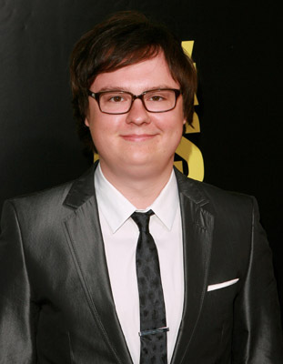

#5502 Voll abgezockt
Alternativ: Identity Thief
 
 IMDB-Wertung: 5.7 / 10
IMDB-Wertung: 5.7 / 10  Metascore: 0
Metascore: 0 
Die Shopping Queen Diana frönt in einem Vorort von Miami ausschweifend ihrer großen Kaufleidenschaft. Unerschöpfliche finanzielle Mittel machen den Luxus möglich. Die Sache hat nur einen kleinen Haken: Die Identität, die Diana beim Einkaufen benutzt, lautet auf den Namen Sandy Bigelow Patterson und gehört einem Kundenberater, der auf der anderen Seite von Amerika lebt. Der echte Sandy Bigelow Patterson bekommt den Identitätsraub nicht nur finanziell zu spüren, auch sein Ruf ist in Gefahr. Ihm bleibt nur eine Woche Zeit, um die Betrügerin aufzuspüren, bevor sein Leben komplett aus den Bahnen gerät. Es gelingt ihm, Diana zu stellen. Auf der 3.000 Kilometer langen Reise nach Denver versucht er mit allen Mitteln, seine Identität zurückzuerlangen. Er besticht, er schmeichelt und er droht. Doch Diana erweist sich als ebenso kratzbürstig wie einfallsreich.
Jahr: 2013
Dauer: 111 Minuten
FSK: 12
Land: USA Studio: Universal PicturesTonspuren: DTS - ,
Untertitel: Deutsch,
Auflösung: 1080p (1920x816) Größe: 6471 MB
Genre: Komödie, Krimi
Regisseur: Seth Gordon
Drehbuch: Hideo Oguni
Soundtrack:
Darsteller:
 Jason Bateman als Sandy Patterson
Jason Bateman als Sandy Patterson- Melissa McCarthy als Diana
 Jon Favreau als Harold Cornish
Jon Favreau als Harold Cornish Amanda Peet als Trish Patterson
Amanda Peet als Trish Patterson-  T.I. als Julian
- Genesis Rodriguez als Marisol
 Morris Chestnut als Detective Reilly
Morris Chestnut als Detective Reilly John Cho als Daniel Casey
John Cho als Daniel Casey Robert Patrick als Skiptracer
Robert Patrick als Skiptracer- Eric Stonestreet als Big Chuck
 Jonathan Banks als Paul
Jonathan Banks als Paul Ryan Gaul als Bartender
Ryan Gaul als Bartender- Tyler Nilson als Party Guy
- Steve Little als Party Guy's Buddy
- Andrew Friedman als Tequila Guy
- Ian Quinn als Winter Park Cop
- Diva Tyler als Booking Officer
- Mary-Charles Jones als Franny Patterson
- Maggie Elizabeth Jones als Jessie Patterson
- Sope Aluko als Secretary at Prominence Denver
-  Brett Baker als Alec
- Jamie Moore als Electronics Store Employee
- Carlos Navarro als Luis the Gas Station Attendant
 Nelson Bonilla als Cop Giving Traffic Ticket
Nelson Bonilla als Cop Giving Traffic Ticket- Lori Beth Sikes als Arlene in the Lady's Choice Salon
- Ben Falcone als Tony / Motel Desk Clerk
- Kate Graham als Counter Girl
- Steve Witting als Bus Station Attendant Carl
- Gary Weeks als Prominence Security Guard
- Matt Burke als Ken Talbott
- Lee Spencer als St. Louis Terrace Manager
- Topher Payne als Hairdresser
- Carmela Zumbado als Salon Sales Person
- Zeeky Minnis als Salon Sales Person
-  John Eddins als St. Louis Cop
- Chick Bernhard als St Louis Cop
- Becky Boyd als Bar Patron in Blue Dress , uncredited
- Harley Castro als Denver Detective , uncredited
- Kevin Covais als Kevin , uncredited
-  Joe Crosson als Business Man , uncredited
 Jason Davis als Kyle , uncredited
Jason Davis als Kyle , uncredited- Todd Denson als Bartender , uncredited
-  Clark Duke als Everett , uncredited
- Jaime Griffon als Jet Ski Mom , uncredited
- Katy Harper als Salon Patron , uncredited
 Walter Hendrix III als Precision Driver , uncredited
Walter Hendrix III als Precision Driver , uncredited- Morgan Hinkleman als Young Diana , uncredited
- Billy James als Chef , uncredited
 Ellie Kemper als Truck-Stop Server , uncredited
Ellie Kemper als Truck-Stop Server , uncredited- Liana Loggins als Model at Bar , uncredited
Datei: X:\2013(N-Z)\Voll abgezockt (2013, FSK12, 1920x816).mkv seit 10.02.2017
Festplatte: HD 2013(I-Z)-2014(A-Z)
 Es gibt insgesamt 133 Filme in der Gruppe '2013(N-Z)'
Es gibt insgesamt 133 Filme in der Gruppe '2013(N-Z)'